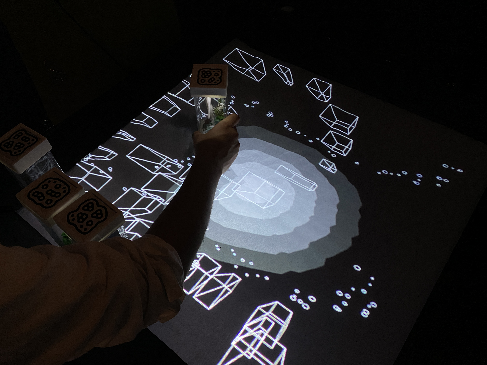
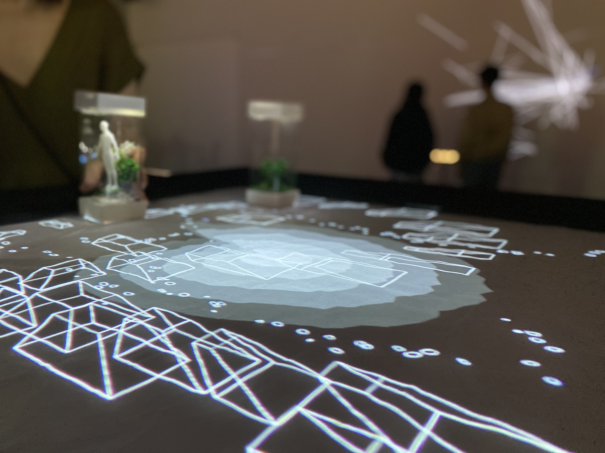
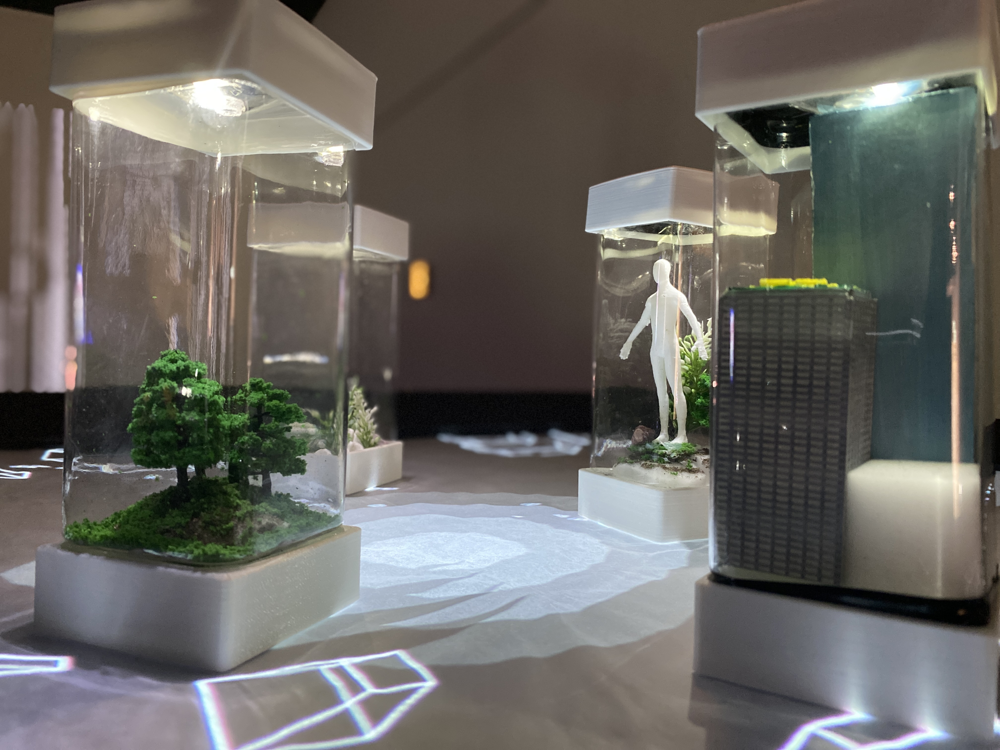
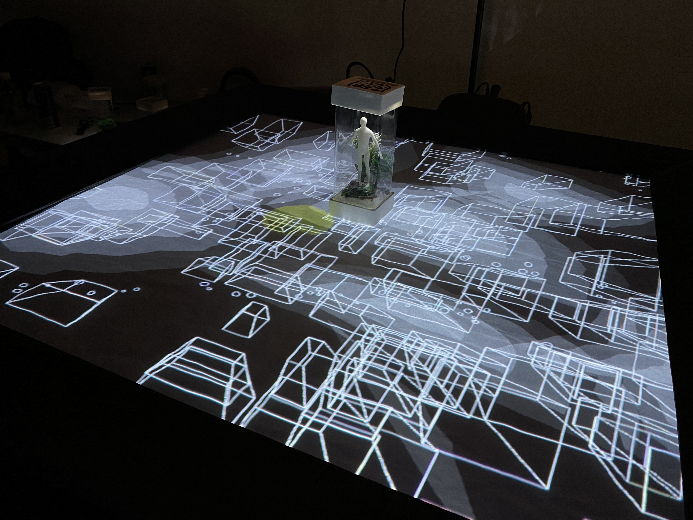

Mixed soundscape and cityscape.
This work was exhibited at the “TAMABLE Exhibition” held at Parthenon Tama in Tokyo.
Artwork / Exhibition 2023
Katsuya Endoh, Miu Kanematsu, Kouta Kikuchi.
京王線が走る多摩川の音、草木がざわめく緑道の音、多摩センターを行き交う人々の音。 今までも、多摩ニュータウンは、さまざまな音景を作り出してきた。 そしてこれからも、さまざまな音景が作られていく。 私たちは、過去、現在、これからの音景を考えるために， 多摩の音を収集し，音景を再配置する装置を作成した。



